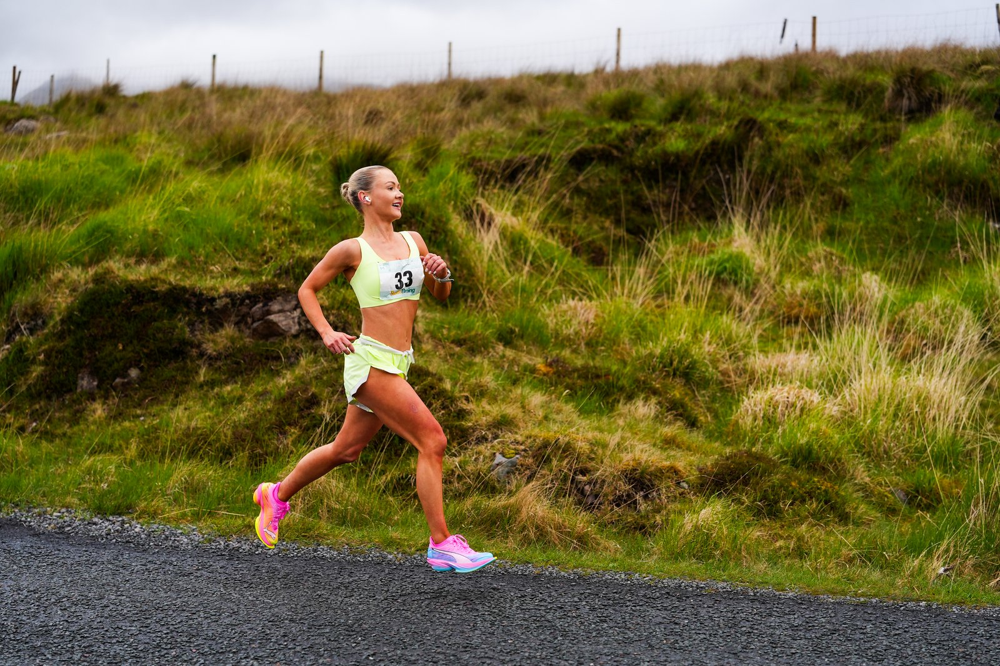
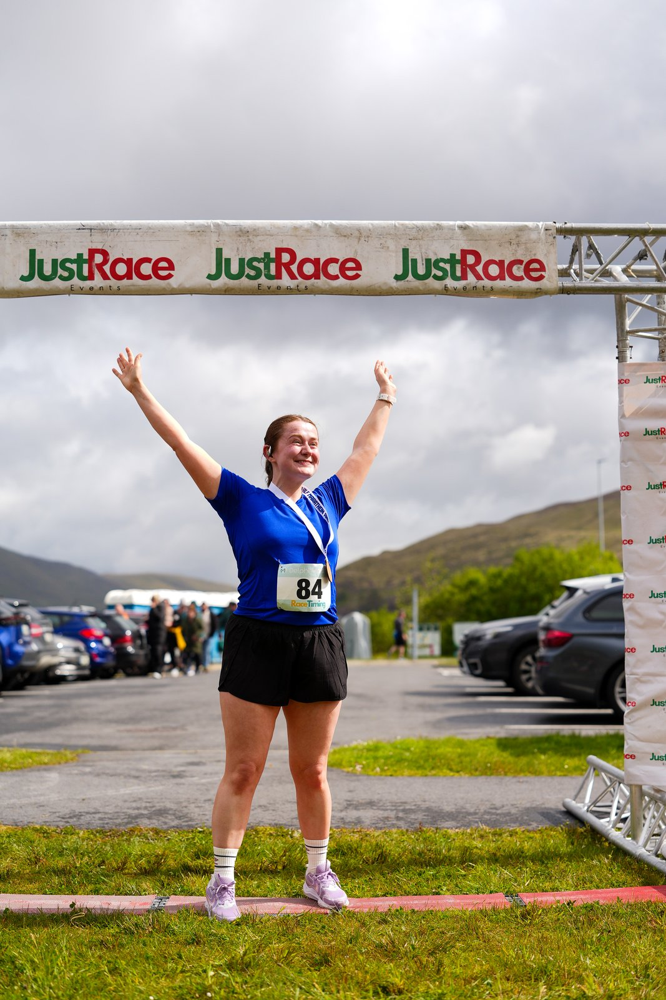

The Delphi Half Marathon & 10K took place on Saturday 16 May 2026, with event coverage by the Image Media team. Both races ran point-to-point from Glenkeen Farm near Louisburgh, Co. Mayo, to Leenane in Connemara, Co. Galway, organised by Delphi Marathon with race timing and operations run by JustRace Events.
The half marathon covered 21.1km with 180m of climbing and 235m of descent, starting at 9:30am, while the 10K covered 10km with 80m of climbing and 100m of descent from a 10:00am start. Organisers describe the officially measured course as mostly downhill and flowing, and the route passed through Doolough Valley and Bundorragha and by Ashleagh Falls before finishing alongside Killary Fjord, Ireland's only fjord. A shuttle bus ran from the Sheep & Wool Centre car park in Leenane to the start line ahead of racing.

Registration sold out ahead of race day, with organisers opening a waiting list; the event's own entry structure — free t-shirts guaranteed for the first 400 registrants — points to a field of several hundred runners across the two distances. Every finisher received a medal, with prizes awarded to the top three men and women plus age-category winners in the 40+, 50+ and 60+ brackets. Entry was open to runners aged 18 and over.

The race is backed by more than two dozen local partners, including Glenkeen Farm and Leenane Hotel, alongside support from Mayo County Council, Discover Ireland and the Wild Atlantic Way. Finishers crossed the line under the JustRace Events arch in Leenane, with mountains and Killary Fjord as a backdrop.
The Image Media coverage team comprised Eduardo Castro, Luis Moreira and Paulo Nomade.